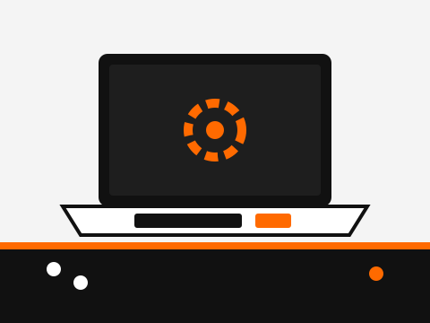
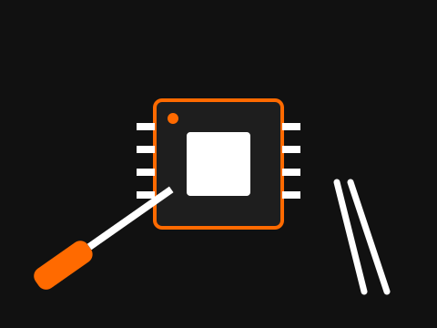

Ноутбуки та ПК
- Заміна екрана та клавіатури
- Чистка від пилу, заміна термопасти
- Ремонт материнської плати
- Встановлення Windows та програм
Ноутбуки, смартфони, планшети та побутова техніка. Безкоштовна діагностика й чесна ціна до початку робіт.
Замовити ремонт«РемБокс» — це невелика майстерня в Києві, де ремонтують техніку так, як би ми ремонтували власну. Ми не змінюємо деталі «про запас» і завжди пояснюємо, що саме зламалося.
Кожен ремонт супроводжується письмовою гарантією. Якщо проблема повернулася, ми виправимо її безкоштовно.
Працюємо з оригінальними та якісними сумісними комплектуючими, а замінені старі деталі повертаємо клієнту.

Ми беремося за найпоширеніші поломки. Якщо вашої проблеми немає в списку — зателефонуйте, і ми підкажемо.

Від вашого дзвінка до готового пристрою — чотири прості кроки.
Зателефонуйте, щоб записатися на діагностику або отримати консультацію.
Телефон +380 66 766 19 13
Контактна особа Скороход М. Є.
Місто Київ
Графік роботи Пн–Сб, 10:00–19:00